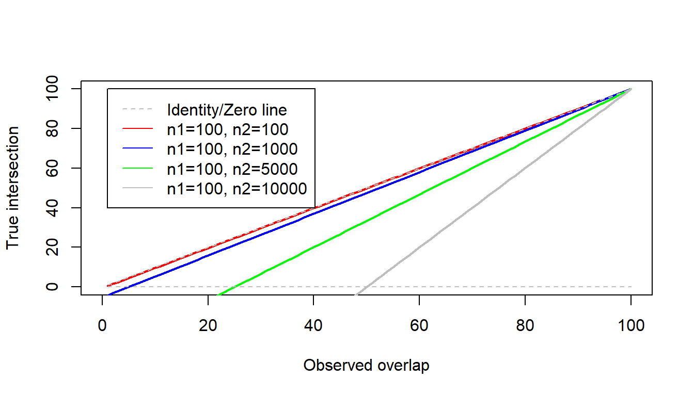
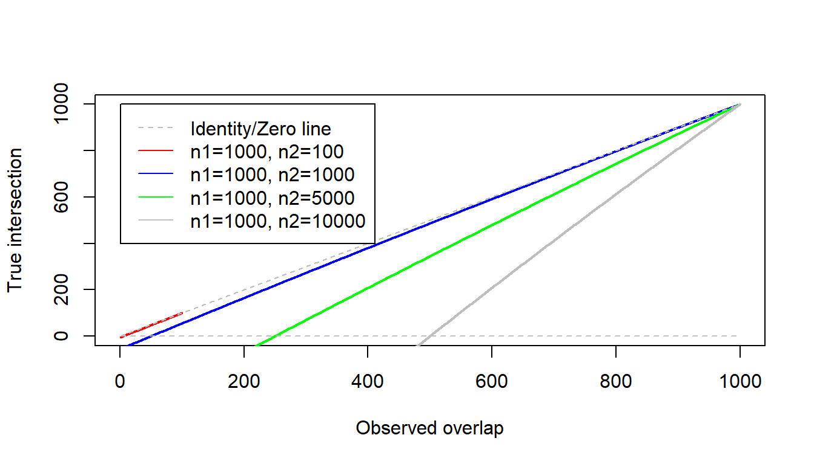
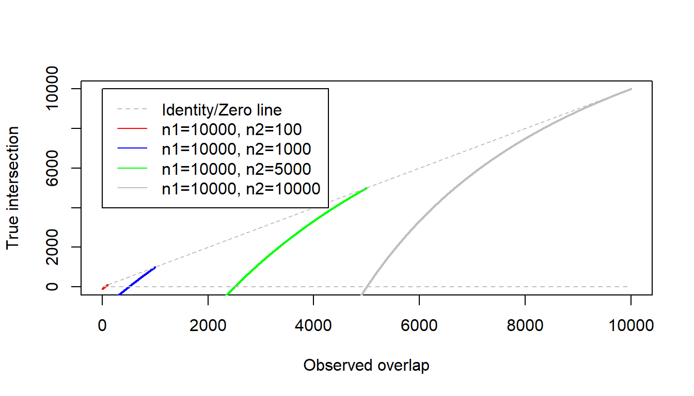

Concordance of microarray and RNA-Seq differential gene expression
In principle, microarray and RNA-Seq measure the same thing: the genome-wide abundance of mRNA molecules. However, the technologies are fundamentally different and the results from the same experiments assayed using the different methods can show substantial differences. Assessing the differences in gene expression measurement exclusively due to the underlying technology requires careful and comprehensive study design, such that other sources of variation in gene expression are controlled, e.g. from biological differences in conditions or samples. Wang et al present a large study comparing microarray and RNA-Seq gene expression data from a set of toxicological treatments with known mechanism of action (MOA) measured in rat liver. The goal of the study was to characterize the concordance of differential gene expression across platforms, test and compare how effective each platform is at detecting expected pathway-level effects based on each treatment’s MOA, and assess the MOA prediction accuracy of each platform using a test set.
In this project, we will reproduce the results from Figure 2a and Figure 3b+c,
as well as compare the pathway enrichment results reported in the paper. Each
group will choose a subset of the samples, termed toxgroups, to analyze.
There are sets of samples corresponding to RNA-Seq and microarray data for each
toxgroup. Unlike previous projects, we will implement a different analytical
pipeline for the RNA-Seq data using current methodologies. At the end of the
project the results will be combined into an overall result and discussed in
class.
Upon completion of project 3, students will be able to do the following:
- Align short reads to the rat genome using STAR and quantify expression using a read counting strategy
- Perform differential expression analysis of RNA-Seq data with DESeq2
- Perform differential expression analysis of pre-normalized microarray expression data using limma
- Map between Affymetrix and refSeq identifier systems
Contents:
- Choose a toxgroup, read the paper & supplemental methods
- RNA-Seq Sample Statistics and Alignment
- Read counting with featureCounts
- RNA-Seq Differential Expression with DESeq2
- Microarray Differential Expressoin with limma
- Concordance between microarray and RNA-Seq DE genes
- Biological Interpretation
- Discuss Your Findings
- Assignment Writeup
1. Choose a toxgroup, read the paper & supplemental methods
Metadata files containing sample info for each toxgroup are found in
/project/bf528/project_3/toxgroups. Pick one of these toxgroups to
analyze. Each toxgroup has approximately the same number of samples; you may
choose whichever you like.
This paper contains many analyses each with many details. Don’t worry if you don’t understand the methods, but do try to understand the main text and the online methods as best you can.
2. RNA-Seq Sample Statistics and Alignment
Lead role: Data Curator
All of the microarray and sequencing datasets have already been downloaded for you from the accessions SRP039021, GSE55347, and GSE47875. To save time, we have also already processed the microarray data as described in the paper, so we will focus solely on the sequencing data processing here.
We have downloaded all of the datasets for you and made them available at
/project/bf528/project_3/samples. Identify the treatment samples (and not the controls) from your toxgroup sample info file. Create symbolic links to those files in your group project directories. You should have nine samples total: 3 different treatments each with three replicates. You do not need to process the control samples, but you will need their sample IDs for the programmer’s role.Run fastqc on each of the fastq files you are analyzing. You may inspect the results from all of them, but in step 2.5 below you will run a tool that gathers information from many runs of fastqc and puts them into a convenient report.
Align each of the samples against the rat genome using the STAR aligner. STAR is an alignment program, like tophat, that is designed specifically for spliced alignment of RNA-Seq data. Load STAR into your environment using
module load star/2.6.0c. Also like tophat, STAR requires a genome index to run, which has been built and provided for you at/project/bf528/project_3/reference/rn4_STAR.NB: Instead of using modules, you are encouraged to try using miniconda to install and manage your software throughout these projects. You may use the SCC miniconda module by running
module load anaconda3, after which thecondaexecutable will be available on the command line. You will need to configure your account prior to creating conda environments by following this guide. If you run into issues with conda, you may use modules if you prefer.STAR has a tremendous number of options. Look at the STAR manual section 3.2.2 for the parameters used by the ENCODE project. Also be sure to specify the
--outFileNamePrefixoption to be unique for each sample. We have provided a skeleton qsub script under/project/bf528/project_3/scripts/STAR.qsubfor you to use.You might consider writing your qsub script to accept an argument of the input fastq filenames. Refer to the foundations page on bash scripting to see how to do this. You can provide command line arguments to qsub scripts on the command line by adding them after the qsub command, e.g.
qsub STAR.qsub read1.fastq.gz read2.fastq.gz.STAR reports alignment statistics when it is finished running. Find these statistics and report them in a table along with your sample names. This should include uniquely aligned reads, multimapped reads, unmapped reads, etc.
The tool multiqc is a very helpful tool for collecting information from many different bioinformatics programs for a set of samples and combining them into a single convenient report. Run multiqc on your samples directory and it should find and process your results from both fastqc and STAR. Examine the results in multiqc and include any plots you deem necessary for communicating the quality of the datasets. We have provided a skeleton qsub script for multiqc under
/project/bf528/project_3/scripts/multiqc.qsub.
Deliverables:
- 9 bam files containing alignments for each of your samples
- A table of read and alignment statistics
- Any other tables or plots from the multiqc output you deem relevant
3. Read counting with featureCounts
Lead role: Programmer
We will now use the alignments from STAR to count reads against a gene
annotation using the program featureCounts. These counts will serve as
the quantificatied transcript abundance measurements for comparing with the
microarray data.
We have provided bam files containing STAR alignments under
/project/bf528/project_3/samples/*.bam for you to use while your group’s
samples are being processed. You can find the metadata for these files in
/project/bf528/project_3/groups/group_EX_rna_info.csv.
- Use the command
module load subreadon the cluster to make thefeatureCountstool available on the command line. Run the command without any arguments to read about its usage. Identify any arguments that might be important to set. - featureCounts requires an annotation file in GTF format, which we have
provided at
/project/bf528/project_3/reference/rn4_refGene_20180308.gtf. Run featureCounts on each of your nine samples to generate individual counts files. We have provided a skeleton qsub script at/project/bf528/project_3/scripts/featureCounts.qsub. You might again consider writing the script to accept command line arguments. Hint: You can create output filenames based on the input filename using thebasenamecommand. - Run multiqc on the directory where your counts files are created (see 2.5). Examine the output and include any plots or statistics you deem relevant to describing the data, e.g. outlier samples, etc.
- Combine the counts files from each sample into a single comma-delimited text
file where the first column is the gene name and subsequent columns are the
counts taken from each file for each sample. Create a header row in the
combined file with “gene_id” in the first column and the corresponding
sample name in subsequent columns. You might consider doing this using the
read.csvfunction and dataframes in R. - Create box plots for each of your samples showing the distribution of counts. Report your observations about distributional differences between your samples.
Deliverables:
- 9 counts files containing gene counts for each sample
- Tables/plots from multiqc for relevant features of the counts data
- A comma-delimited text file containing the concatenated counts matrix
- A box plot containing count distributions for each of your samples
4. RNA-Seq Differential Expression with DESeq2
Lead Role: Programmer
The most basic processed form of data from RNA-Seq experiments are read counts. The distribution of count data have three properties that make standard statistical methodologies like linear models unsuitable for analysis. First, counts are discrete, i.e. they only occur as integers. Second, they do not follow a normal distribution, since there can be no negative counts. And third, the mean and variance of a given gene’s count distribution are not independent, as often the higher the mean count of a gene, the greater the variance. For this reason, generalized linear models, in particular negative binomial regression, is the statistical tool most frequently used to analyze count data. DESeq2 and edgeR are two such software tools that use negative binomial regression to estimate count differences given a statistical design. In this step you will use DESeq2 to determine differential expression between your treated samples and appropriate controls.
- Create a new counts matrix that includes control counts. Your sample metadata
file
group_N_rna_info.csvcontains the sample IDs of the control samples for vehicles that correspond to your treatment samples. Identify the columns of your control samples in the sample matrix provided at/project/bf528/project_3/samples/control_counts.csv. You will need to subset columns out of the control matrix and merge them with your treatment counts matrix. NB: Be sure you are matching rows of the treatment and control samples so that the genes match. - Install the DESeq2 package from Bioconductor,
read the vignette to learn how to use it. We have provided an example script
illustrating DESeq2 usage in
/project/bf528/project_3/scripts/run_deseq.Rto help you. - Write an R script to run DESeq2 comparing each group of your samples to the controls in the combined data matrix from 4.1. This will produce three separate DE gene lists, one for each condition with a corresponding set of controls. You will need to modify your script for each comparison; you may consider writing separate scripts for each analysis or put them all in the same script. You will need to subset your counts matrix to include only the relevant samples for a given comparison before running DESeq2. The appropriate controls for a given treatment are the ones that have the same vehicle value.
- Write out the differential expression results to files sorted by adjusted p-value. Report the number of genes significant at p-adjust < 0.05.
- Report the top 10 DE genes from each analysis by p-value in a table
- Create histograms of fold change values from the significant DE genes for each analysis. Also create scatter plots of fold change vs nominal p-value.
- 4 person groups only: Read the DESeq2 manual to identify how to extract
the normalized counts out of the DESeq2 object, and save the normalized
counts matrix to a file. You will use this matrix for clustering in part
Deliverables:
- A report of the number of DE genes at p-adjust < 0.05
- A table of the top 10 DE genes from each of your analyses
- Histograms of fold change values and scatter plots of fold change vs nominal-pvalue from the significant DE genes
- 4 person groups only: Normalized counts matrices for each of your analyses
5. Microarray Differential Expressoin with limma
Lead Role: Analyst
limma is a
highly mature Bioconductor package that implements the standard analytical
methodology for microarray differential expression analysis. The authors used
RMA normalization + limma to determine differential expression between the
different treatments and control samples. You will generate similar analyses
using the pre-normalized expression matrix made available by the authors. You
will find the samples that correspond to the sequencing data treatments in the
file names /project/bf528/project_3/groups/group_X_mic_info.csv.
The full RMA expression matrix has been made available at
/project/bf528/project_3/samples/liver-normalization-rma.txt for your use.
Since we have the pre-normalized expression matrix, you will not need to
perform normalization or QC yourself and may begin directly with differential
expression.
- Install limma and use it to run differential expression analysis of your
samples versus the appropriate controls using the provided RMA normalized
expression matrix. Be sure to read the limma documentation for details on
how to use the package. You may also find the section on
limma
from R for Biological
Sciences helpful.
We have provided an example R script that implements a limma analysis at
/project/bf528/project_3/scripts/run_limma.Rfor your reference. You will need to change the script to reference your groups samples and the appropriate comparisons. There should be one microarray DE analysis for each of those you produced in 4.3. - Write out the differential expression results to files sorted by adjusted p-value as you did in 4.4. Report the number of genes significant at p-adjust < 0.05.
- Report the top 10 DE genes by p-value in a table for each of your analyses
- Create histograms of fold change values from the significant DE genes from each of your analyses. Also create scatter plots of fold change vs nominal p-value.
Deliverables:
- A report of the number of DE genes at p-adjust < 0.05
- A table of the top 10 DE genes from each of your analyses
- Histograms of fold change values and scatter plots of fold change vs nominal-pvalue from the significant DE genes
6. Concordance between microarray and RNA-Seq DE genes
Lead Role: Analyst
The primary finding of the paper was that the concordance of RNA-Seq and microarray expression estimates depends on a number of factors, including biological effect size and gene expression level. Using the differential expression results from both DESeq2 and limma above, you will implement the method used by the paper to measure and examine concordance between platforms.
We have provided example differential expression results from both methods
in /project/bf528/project_3/results for you to use until the DESeq2
results come available for your samples.
Read the online methods of the paper that describe how concordance was calculated.
Implement this concordance method in R or your language of choice. The input should be two sets of DE genes. You will need to figure out how to map Affymetrix probe IDs from the microarray analysis to refSeq identifiers used by the RNA-Seq analysis. We have provided a refSeq-to-probe id mapping in
/project/bf528/project_3/refseq_affy_map.csv. Read the paper closely for clues on how the authors accomplished this. A short discussion of the concordance calculation is provided at Wang et al 2014 Concordance Calculation.Compute concordance for the significantly DE genes from each of your three analyses.
Produce a plot like that in Figure 2a, which plots the concordance vs the number of DE genes from the RNA-Seq analysis. Also plot concordance vs number of DE genes from the microarray analysis.
Subdivide the DE genes into “above-median” and “below-median” groups as in Figure 3 b+c for each of your sample groups. Compute the concordance of these separate groups of genes. Use the RNA-Seq results to determine median from the
baseMeancolumn in the DESeq2 results, which corresponds to the overall mean count of the gene across all samples in the comparison.Produce a bar plot combining overall concordance measures you obtained for the overall DE gene list and the above- and below-median subsets. Challenge: Try to recreate the figure, by computing concordance for increasing subsets of genes ranked by fold change descending. You will have to decide how to handle the case of having different numbers of DE genes between platforms.
Deliverables:
- Concordance between overall, above-, and below-median genes for all three analyses
- A plot of overall concordance vs number of DE genes from each analysis
- A combined plot of overall, above-, and below-median genes for each of your analyses, and the challenge plot if you so desire
7. Biological Interpretation
Lead role: Biologist - for 4 person groups only
The authors chose chemical agents that cause toxcity via five known, distinct mechanisms of action (MOA). The MOAs spanned a range of effect severity and biological processes. Since each chemical falling under an MOA should participate in the same processes, the DE genes identified by an individual chemical treatment should concur with the overall pathways for treatments in its MOA. The authors provided results from a gene set enrichment analysis in Supplementary Table 4. You shall seek to determine whether your DE genes are in agreement with the processes listed by the authors.
We have provided example differential expression results from both methods
in /project/bf528/project_3/results for you to use until the DESeq2
results come available for your samples.
The authors also sought to evaluate the utility of both platforms in predicting the MOA of a given treatment using a cluster analysis. While this clustering analysis is too in-depth to reproduce here, you will create a heatmap-based hierarchical clustering of your RNA-Seq samples to look for segregation by MOA.
We have provided an example set of normalized counts for you to use until those
from your group come available: /project/bf528/project_3/results/example_deseq_norm_counts.csv.
- Using a gene set enrichment method of your choosing (e.g. DAVID, Gather, GSEA, etc.) and the DE genes from your treatments, compare the pathway enrichment results of your genes to those reported in the paper.
- Take the normalized expression matrix from part 4 and produce a clustered heatmap of the counts. Experiment with filtering metrics of average count, coefficient of variation, etc. to see if you can induce a clustering that is consistent with MOA.
Deliverables:
- A table of enriched pathways identified with your DE genes from each of your analyses, and a discussion of how they compare to those reported in the supplement
- A clustered heatmap of your normalized counts, potentially showing how samples from each MOA cluster together
8. Discuss Your Findings
Discuss your findings with your team members and other teams. Some interesting questions to consider:
- How well do our numbers of differentially expressed genes agree with theirs? What are some of the potential differences between your analysis and theirs that might have caused different numbers? If you see a difference, is that a concern?
- Were you able to replicate their main finding that concordance between platforms is dependent upon effect size and expression level? Why or why not?
- Do you think the premise of this study, that chemicals with similar MOAs will induce the a similar gene expression response, is reasonable?
Assignment Writeup
Refer to the [Project Report Guidelines].
26.1 Wang et al 2014 Concordance Calculation
Consider a differential expression experiment where two different datasets are used to identify DE genes. The DE genes from each experiment may be depicted as subsets (A and B) of all possible genes (G), as depicted in Figure 1. We indicate the number of genes in the sets A, B, and G as \(n_1\), \(n_2\), and \(N\), respectively.
G represents the space of all possible genes. “All possible genes” may mean different things based on the context. For example, not every gene will be detected in an RNA-Seq experiment, and so you could argue that \(N\) should be the number of genes detected, rather than the number of genes in the whole genome. Without a priori knowledge like this, \(N\) should be set to the number of genes in the genome. Regardless, for genome-wide experiments, setting \(N\) to the total number of genes in the genome is usually a defensible choice.

Figure 1
If you threw a dart at Figure 1 (and were guaranteed to hit it), the probability of hitting the area of A is \(p_A = n_1/N\), and likewise the probability of hitting B is \(p_B = n_2/N\). It follows that the probability of hitting the intersection is \(p_{A\cap B} = p_Ap_B = (n_1/N)(n_2/N)\). Therefore, the number of genes that corresponds to the intersection is \(n_{A\cap B} = Np_{A\cap B}\) (they use \(n_0\) in the text).
If A and B are independent, there is still some probability they will overlap by chance. This probability is proportional to the size of the sets, where larger sets will result in a higher probability of overlap by chance, since they comprise a larger proportion of the overall set G. Consider Figure 2, where the size of the sets, and therefore the size of the intersection, is enlarged compared with Figure 1. Some number \(n_r\) of the intersecting genes have occurred by chance. The total number of observed intersecting genes is therefore composed of a “background” part \(n_r\) and a “true” part \(n_x\) (they use \(x\) as \(n_x\) in the text), \(n_{A\&B} = n_r + n_x\).

Figure 2
Since the probability of observing overlap by chance is dependent upon the size of the sets \(n_1\) and \(n_2\), the authors reason that they can compute \(n_x\) by examining the probability of intersection for the set of genes that results after removing the size of the “true” overlap.
\[ n_0 = n_x + \frac{(n_1 - n_x)(n_2 - n_x)}{N-n_x} \]
Since \(n_0, n_1, n_2,\) and \(N\) are known, we can solve this equation for \(n_x\) to find the background corrected number of “true” overlapping genes.
\[ n_x = \frac{Nn_0-n_1n_2}{n_0+N-n_1-n_2} \]
In other words, the number of genes we expect to overlap by chance depends upon the number of total genes, the size of the observed overlap, and the size of each set.
Note the effect of background correction is subtle for small values of \(n_1\) and \(n_2\). Below are plots of observed (\(n_{A\cap B}\)) versus “true” overlap (\(n_x\)) using the formula presented in the paper for different values of \(n_1\) and \(n_2\), given a constant \(N\) of 20,000 genes.
fig3 <- do.plot(100)
fig4 <- do.plot(1000)
fig5 <- do.plot(10000)